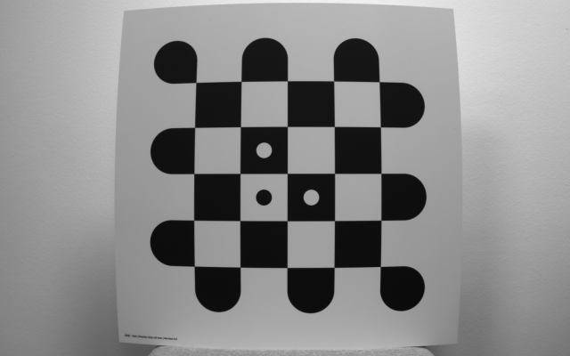
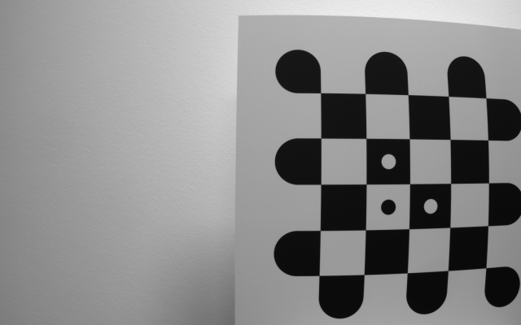
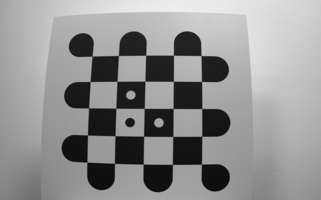
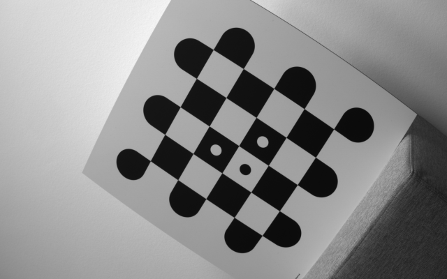
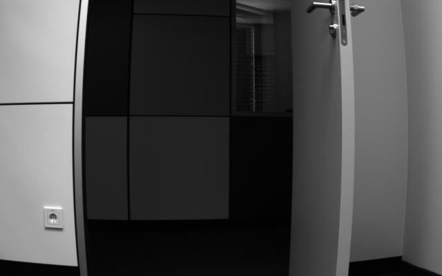

Geometric camera calibration is an important image processing technique used to compute intrinsic and extrinsic parameters of a camera system. These parameters characterize the mapping between 3D points in the world and their corresponding 2D projections in the image plane.
Recommended application scenario
The intrinsic and extrinsic parameters obtained from camera calibration serve a wide range of purposes in computer vision.
- Measurement: Calibration is indispensable for precise measurements in applications where accurate dimensions are critical. It ensures that measurements derived from images or sensors are accurate and consistent.
- Image Undistortion: It corrects distortions caused by the camera lens, resulting in undistorted images that are crucial for downstream tasks like feature detection and matching.
- Stereo Vision: In stereo vision applications depth perception is derived from images captured by multiple cameras. Accurate calibration ensures the alignment of corresponding points in the stereo image pairs, enabling precise 3D reconstruction.
Requirements
Calibration Plate
To perform a calibration you need:
- a calibration plate from IDS Imaging Development Systems GmbH which you can directly obtain from the sales department.
- a corresponding description file, which can be downloaded from here.
- to check the calibration plate for stains or damage (e.g. scratches), as these have a negative influence on the quality of the calibration.
Images
To ensure a successful calibration process, adhere to the following guidelines when capturing images of the calibration plate:
- Capture at least 10 to 15 images with different poses of the calibration plate. We recommended to capture one or two additional images in case the markers are not detected in individual shots.
- Configure the camera with the following settings:
- Set a fix aperture. Changes in brightness can be readjusted using the camera's exposure time while taking the images, if required.
- Set a fix focus, respectively focal length.
- Note: If you change aperture or focus you have to recalibrate the camera.
- Strictly avoid any non-linear transformations (e.g., gamma correction) during image capture.
- Pay attention to the following quality criteria when taking the images:
- Achieve optimal contrast between the background and calibration marks.
- Preferably use homogeneous lighting conditions for even exposure. Avoid overexposure under all circumstances.
- Save the captured images in an uncompressed format. Compression artifacts can compromise calibration accuracy.
- Position the calibration plate in the image according to the following guidelines:
- Maximize the calibration mark diameter in the image while ensuring the calibration plate remains fully visible. The calibration plate should cover at least a quarter of the image.
- Move the calibration plate across the entire image field. Move the plate as far as possible into the corners, ensuring the pattern remains fully visible.
- Capture images with a tilted calibration plate, up to an angle of 45°, to ensure a comprehensive calibration.
Usage instructions
To perform a camera calibration using one of the provided interfaces, follow the steps below:
- C++
std::vector<peak::icv::Image> images = ReadImages();
auto calibrationResult = calibration.Process(images);
std::cout << "Mean reprojection error: " << calibrationResult.GetMeanReprojectionError() << std::endl;
- C#
using var calibrationPlate =
new CalibrationPlate(
"radon-checkerboard-marker-65mm-6x6.json");
using var images = SnippetHelper.ReadImagesFromDir("calibration_images");
using var calibrationResult = cameraCalibration.Process(images);
Console.WriteLine("Mean reprojection error: {0}", calibrationResult.MeanReprojectionError);
- Python
calibration_plate = CalibrationPlate.create_from_file("radon-checkerboard-marker-65mm-6x6.json")
camera_calibration = CameraCalibration.create_from_plate(calibration_plate)
images = read_images()
calibration_result = camera_calibration.process(images)
print("Mean reprojection error: ", calibration_result.mean_reprojection_error)
Individual steps
Create a CameraCalibration object
The calibration process is facilitated using an instance of the CameraCalibration class. Since calibration relies on the known positions of world points (specifically, the checkerboard corners), this positional data must be provided to the instance of CameraCalibration.
The world points are stored in a description file, which can be loaded using the CalibrationPlate class.
Once the CalibrationPlate object has been initialized, it must be used to create a CameraCalibration object.
Take images of the calibration plate
To determine the calibration parameters, images of a calibration plate captured from various poses are required. These images must be stored in an array (see the API Reference for the specific type used).




Carry out the calibration
The parameters are calculated by the process function of the CameraCalibration class. Since this process needs the images, the array containing the images must be passed to the function. The function returns an instance of CalibrationResults that contains the determined parameters. See Result of the Calibration for details.
Check the error
Check the mean reprojection error of the calibration process to ensure it is below 0.25. This value is stored in the CalibrationResult object returned by the process function.
Persisting Results
Save Calibration Results to a File
Once the calibration has been successfully completed and validated, the resulting parameters can be stored for later use. The preferred method is to save the calibration result to a file. This allows you to reload and reuse the parameters without repeating the calibration process.
- C++
calibrationWriter.
Write(
"calibration_result.json", calibrationResult);
- C#
calibrationResultWriter.Write("calibration_result.json", calibrationResult);
- Python
calibration_result.save("calibration_result.json")
To load calibration parameters from a file, use the corresponding constructor:
- C++
- C#
using var loadedCalibrationResult =
new CalibrationResult(
"calibration_result.json");
- Python
calibration_result = CalibrationResult.create_from_file("calibration_result.json")
Upload Calibration Parameters to the Camera
As an alternative to file-based storage, you can upload the calibration parameters directly to the camera’s internal memory. This requires converting the parameters to a binary format and using the FileAdapter class from the IDS peak genericAPI.
- C++
#include <peak/peak.hpp>
auto binaryCalibrationParameters = calibrationParameters.
ToBinary();
peak::core::file::FileAdapter fileAdapter(nodeMapRemoteDevice, "LensCalibrationData");
auto dataWrite = reinterpret_cast<uint8_t*>(&binaryCalibrationParameters);
fileAdapter.Write(dataWrite, sizeof(peak_icv_calibration_parameters));
- C#
var calibrationParameters = calibrationResult.CalibrationParameters;
var binaryCalibrationParameters = calibrationParameters.ToBinary();
using var fileAdapter = new FileAdapter(nodeMapRemoteDevice, "LensCalibrationData");
fileAdapter.Write(new ByteCollection(binaryCalibrationParameters));
- Python
import numpy as np
from ids_peak import ids_peak
calibration_parameters = calibration_result.calibration_parameters
binary_calibration_parameters = calibration_parameters.to_binary()
file_adapter = ids_peak.FileAdapter(node_map_remote_device, "LensCalibrationData")
file_adapter.Write(binary_calibration_parameters.tobytes())
To download the parameters back from the camera, use the Read method of the FileAdapter:
- C++
std::vector<uint8_t> dataRead(sizeof(peak_icv_calibration_parameters));
fileAdapter.Read(dataRead.data(), sizeof(peak_icv_calibration_parameters));
- C#
var calibrationParametersReadBinary = fileAdapter.Read((ulong)binaryCalibrationParameters.Length);
- Python
read_bytes = file_adapter.Read(binary_calibration_parameters.size)
read_back_binary_calibration_parameters = CalibrationParameters.create_from_binary(np.frombuffer(read_bytes).copy())
Result of the Calibration
The calibration result represents the outcome of a camera calibration process. It includes the calibration parameters, the mean reprojection error of the calibration and detailed information about each processed image, referred to as a calibration view.
This calibration result can be used in functions that require calibration parameters, and the type will be automatically converted as needed. However, if there is more than one calibration view in the calibration result, the extrinsic parameters are set to the identity matrix. This conversion is one-way and cannot be reversed.
For example, the calibration parameters can be applied to correct lens-induced distortion and produce an undistorted image.
| Original image | Undistorted image |
 | |
Reprojection error
It describes a geometric error corresponding to the distance between a projected point and a measured marker point in an image.
Typically, this error should be minimized to below 0.25, although the desired accuracy may vary depending on the application.
Calibration parameters
Calibration parameters consist of the intrinsic and extrinsic parameters.
- Intrinsic parameters consist of distortion coefficients, the focal length expressed in pixel units, and the principal point. These parameters are essential for tasks such as image undistortion and point cloud generation.
- Extrinsic parameters consist of a rotation and a translation, which typically describe a pose of an object. Both are essential for a workspace calibration.
For a basic camera calibration the extrinsic parameters are all set to zero, because no pose is selected during camera calibration. In fact each calibration view contains the pose of the calibration plate in the image.
Calibration view
To calibrate a camera several images of different poses of the calibration plate are necessary. For each of those images the following parameters are determined and stored in the calibration view:
Reprojection errors: A list of reprojection errors, where each error corresponds to a detected marker point. These errors offer statistical insights and help assess the calibration process quality.
Each entry includes the following details:
- Position: The location of the detected marker in the image coordinate system.
- Direction vector: A (x, y) vector that describes the reprojection error, including directional information.
- Length: It describes a geometric error corresponding to the distance between a projected point and a measured marker point in an image, representing the reprojection error.
Mean reprojection error: The mean reprojection error is calculated across all marker points from the current calibration view. For more details on reprojection error, see chapter reprojection error.
Maximum reprojection error: This is the maximum reprojection error, measured by distance, found among the list of reprojection errors.
Use saved calibration parameters
To use saved calibration parameters using one of the provided interfaces, follow the steps below:
- C++
- C#
using var undistortion =
new Undistortion(calibrationParameters);
using var calibrationResult =
new CalibrationResult(
"path/to/load/calibration_result.json");
using var undistortion =
new Undistortion(calibrationResult);
using var calibrationResult =
new CalibrationResult(
"path/to/load/calibration_result.json");
var calibrationParameters = calibrationResult.CalibrationParameters;
using var undistortion =
new Undistortion(calibrationParameters);
using var calibrationResult =
new CalibrationResult(
"path/to/load/calibration_result.json");
var calibrationParameters = calibrationResult.CalibrationParameters;
using var undistortion =
new Undistortion(calibrationParameters.IntrinsicParameters);
- Python
calibration_parameters = CalibrationParameters.create_from_file("path/to/load/calibration_parameters.json")
undistortion = Undistortion(calibration_parameters)
calibration_result = CalibrationResult.create_from_file("path/to/load/calibration_result.json")
undistortion = Undistortion(calibration_result)
calibration_result = CalibrationResult.create_from_file("path/to/load/calibration_result.json")
calibration_parameters = calibration_result.calibration_parameters
undistortion = Undistortion(calibration_parameters)
undistortion = Undistortion(calibration_parameters.intrinsic_parameters)